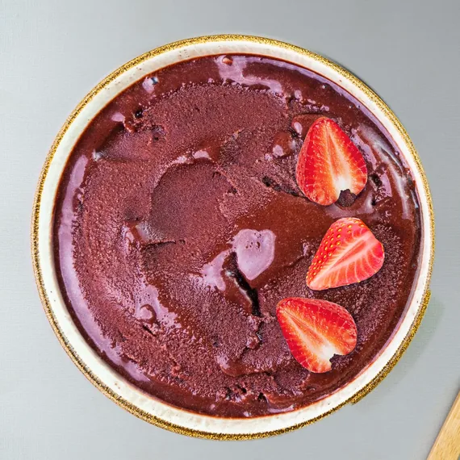
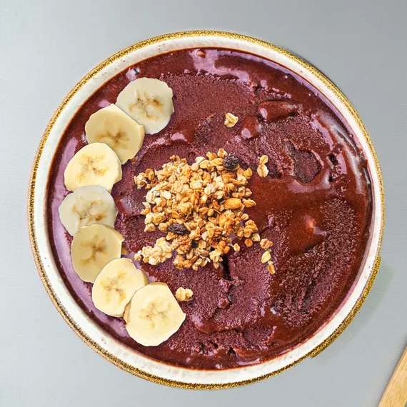

3 min read
What does açaí taste like?
Açaí is deep and earthy, like dark berries with a hint of dark chocolate, and barely sweet on its own. What to expect, and how our four açaí sorbets differ.
If you have never had açaí, the color sets you up for something like a blueberry. It is not quite that. Here is what açaí tastes like, why it is usually sweetened, and how our four açaí sorbets differ from each other.
 The Amazon WorksOrganic Açaí Original Sensation, all four toppings
The Amazon WorksOrganic Açaí Original Sensation, all four toppings
The Midnight BerryAçaí Zero Sugar (Not a low calorie food.) with strawberry
The Sunrise Banana CrunchAçaí Banana Sunrise with granola and banana The Crush Banana BerryAçaí Strawberry Crush with banana and strawberry
The Crush Banana BerryAçaí Strawberry Crush with banana and strawberry
Serving suggestions; toppings are not included. Tap a bowl to open it in the bowl builder.
What does açaí taste like?
Açaí tastes deep and earthy. People often describe it as a cross between blackberries and dark, unsweetened chocolate, with a little tartness at the end. It is rich rather than juicy, and it is not very sweet on its own.
The fruit is part of the story. An açaí berry is mostly seed, with a thin layer of dark purple flesh. That flesh is what becomes açaí purée, and the purée is smooth and thick, closer to a cream than a juice.
Is açaí sweet?
Not by itself. Unsweetened açaí tastes more like dark fruit and cocoa than like dessert. In the Amazon, where açaí is an everyday food, it is often eaten unsweetened, alongside savory food. Elsewhere it is usually sweetened, which is how most people first meet it: in a bowl, a smoothie or a sorbet.
What does açaí sorbet taste like?
Açaí sorbet keeps the deep, dark flavor of the fruit and adds enough sweetness to make it a dessert. It is smooth and dense, and it scoops straight from the pint. There are four in our range:
- Organic Açaí Original Sensation is 60% organic açaí, sweetened with organic cane sugar and organic agave syrup. Deep and dark: the one closest to the fruit.
- Açaí Zero Sugar is also 60% açaí, with zero sugar. Not a low calorie food.
- Açaí Banana Sunrise is 40% açaí with 6% banana. The banana rounds off the earthy edge.
- Açaí Strawberry Crush is 40% açaí with 6% strawberry, for a brighter, fruitier açaí.
Does açaí taste like chocolate?
A little. There is no chocolate in açaí, but its deep, slightly bitter finish reminds many people of cocoa. Its Amazon neighbor cupuaçu is a relative of cacao; you will find it in our Cupuaçu & Coconut sorbet.
What goes well with açaí?
Anything that brings sweetness, freshness or crunch. Banana softens it, strawberry brightens it, granola adds crunch and coconut adds a tropical finish. Those are the four toppings in our bowl builder, where you can try every combination. For more ideas, see Açaí bowl toppings.
How should you taste açaí for the first time?
Start with a small scoop of Original Sensation, straight from the freezer, and taste it plain. Then add a few slices of banana and a spoon of granola, and taste it again. Not sure which flavor to start with? Find your flavor in four taps.
Related: What is açaí sorbet? · An açaí bowl without a blender · All ten flavors
Austropical açaí and tropical fruit sorbets come to US freezers in March 2027. The first container carries Organic Açaí Original Sensation and Organic Mango; the rest of the range follows.
Serving suggestions; toppings are not included. Açaí Zero Sugar: Not a low calorie food. Product of Brazil.